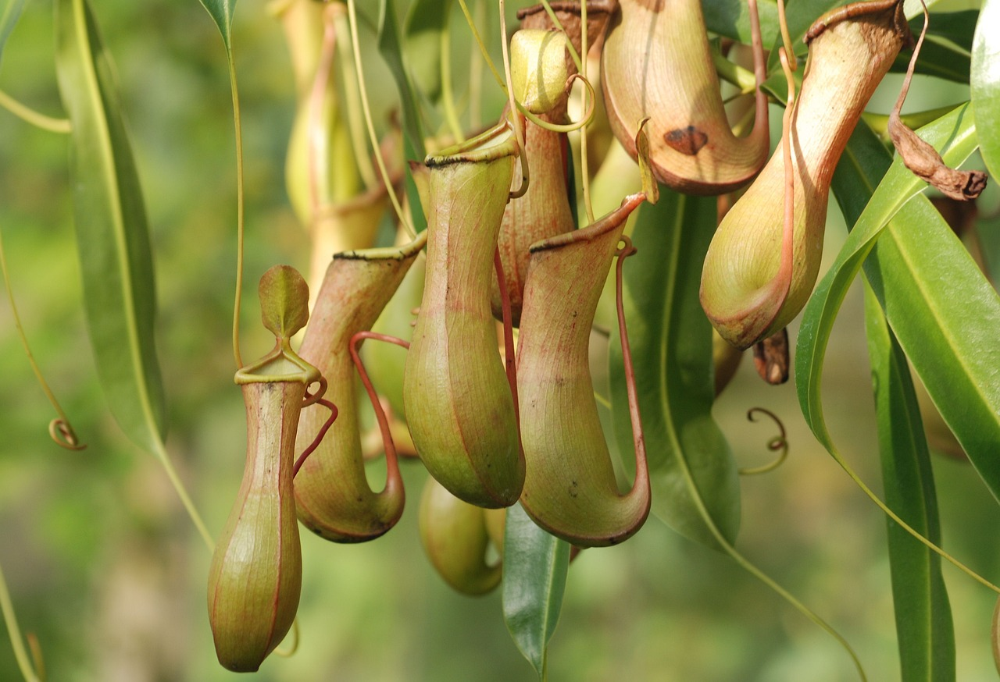

- 

Welcome to TAKA's
homepage!
これは技術の授業で使うために作ったホームページです。
2年の時に作ったやつのリメイク版でもあります...
また、自分はデザインのことは何も知らないので、あしからず。
自己紹介

プログラミング
小学二年生ぐらいにスクラッチを触ったのが始まりです。
それからずっと続けて、今に至ります。
とにかく書いたプログラムが思い通りに動いてくれるのがうれしい

植物の栽培
特に熱帯の植物、それも食虫植物を育てるのが好きです。
かなり小さいころ、広島植物園で食虫植物を見たのが最初でした。
熱帯植物が好きな理由は、とにかく速く育つのと、
独特の不思議な形が好きだからです。

3Dパズル
小さいころの誕生日に東急ハンズで買ってもらってからずっとハマっています。
ただ、自分の大好きなブランドがウクライナの会社なため、
最近新作が出されないのが悲しいです。
一時期は売られている商品を見るためだけに
ハンズに行って2時間ぐらい見る時もありました。

温泉
日本といえば温泉です。
親が旅行好きなので、温泉もしょっちゅう行っていました。
雄大な景色を眺めながら入る温泉は格別です。
そして温泉に入った後にアイスを食べるのがセオリーです。

読書
昔、なぜか図鑑をずっと読んでました。
最近はハリポタシリーズや、少しマイナーですが
ミヒャエル・エンデさんの本をよく読みます。
感想
久しぶりにhtml,cssを触ったけど、やりたいことが割とさっとできて楽しかったです。
特にホーム画面の一番上のスライドショーがかなり気に入ってます。また、自分はデザインには全く通じていないので、
とにかく自分の「こうしたらいい感じになりそう」を実現していった感じです。結果的には自分で満足のいくホームページができてよかったです。
技術的な感想
これまでもhtmlを触ったことはあったけど、ここまで大規模にやったことはありませんでした。
特に今回はjqueryを本格的に使ってみました。めっちゃ楽です。タグやスクロール量の取得やcss付与がすぐにできるのが本当に強いです。
そして今回はcssも頑張りました。これまでmarginやpaddingの意味すら分かっていなかったので、かなり進歩したと思います。
これからはReactやVue.jsなどのフレームワークも使ってみたいと思いました。